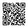

<!doctype html><html lang="en"><meta charset="utf-8"><meta name="viewport" content="width=device-width,initial-scale=1"><title>Signal Drop 001</title><style>body{font:1.1rem/1.65 system-ui,sans-serif;background:#f8f5ed;color:#243b2f;margin:auto;padding:2rem 1rem;max-width:54rem}h1,h2{line-height:1.15}h1{font:3rem/1.08 Georgia,serif}a{color:#245f47}figure{margin:0}img,video,audio{max-width:100%}li{margin:.6rem 0}.gallery{display:grid;grid-template-columns:repeat(auto-fit,minmax(140px,1fr));gap:1rem}.gallery img{display:block;width:100%}</style><main><h1>Signal Drop 001</h1><p>Scan the printed card to open the original campaign link.</p><ul><li><a href="https://potify-launch-room.wile-e-coyot.chatgpt.site/r/drop001">Open the encoded link</a></li></ul></main></html>
